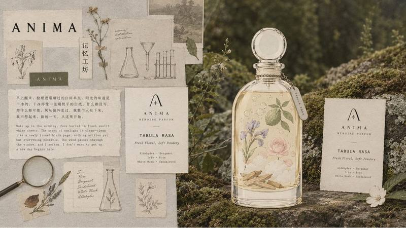
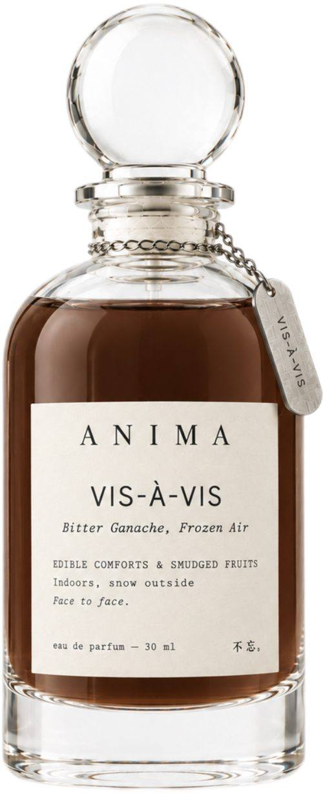
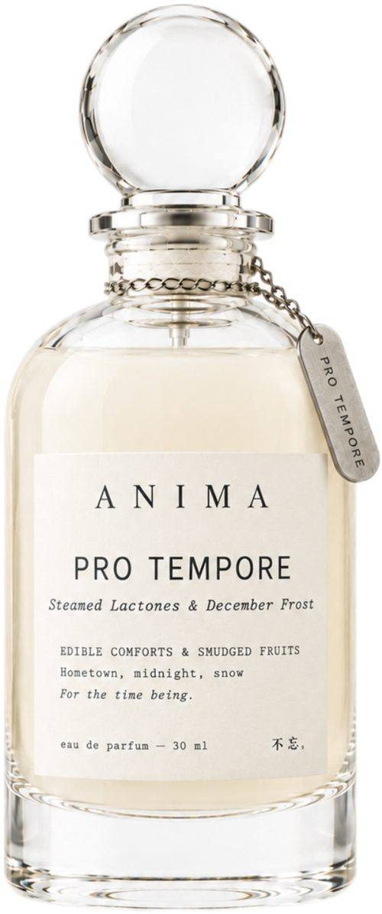
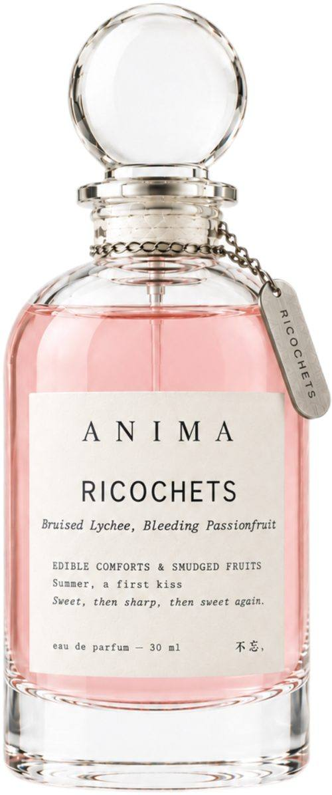
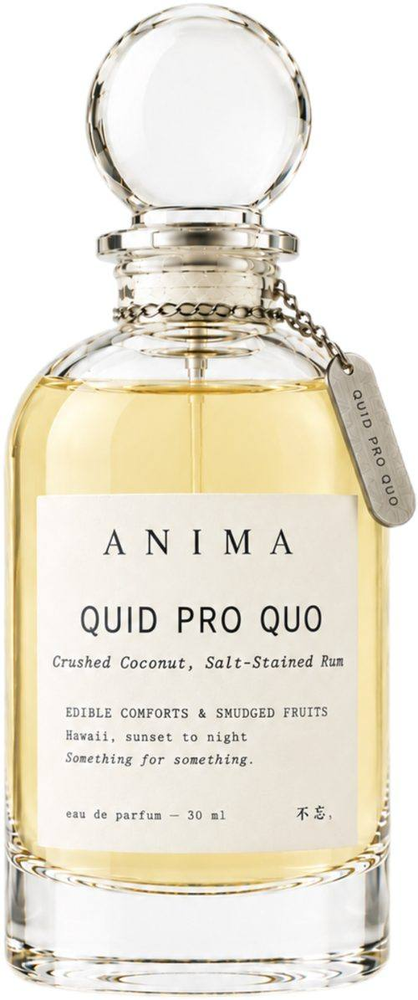
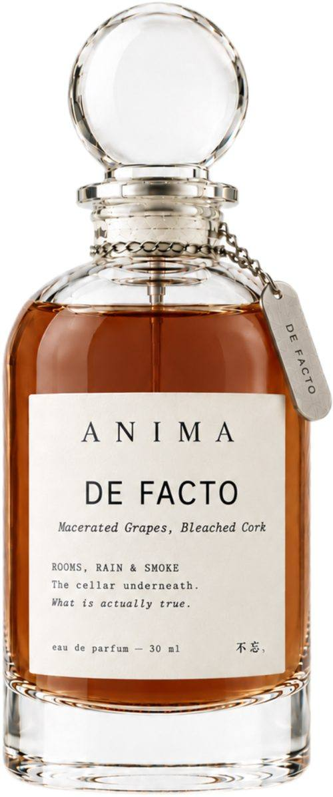
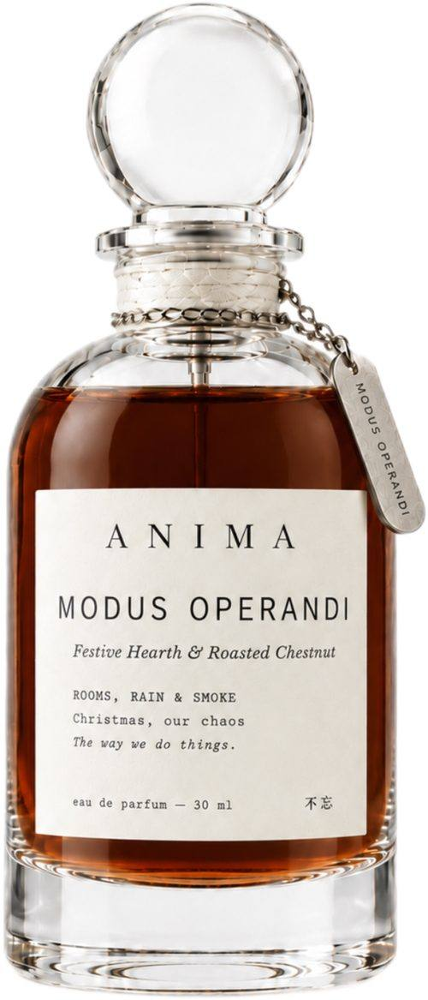
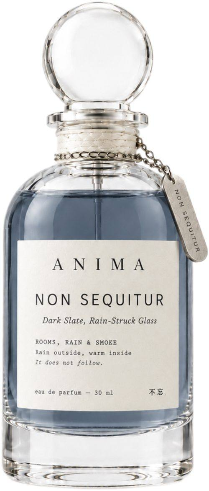
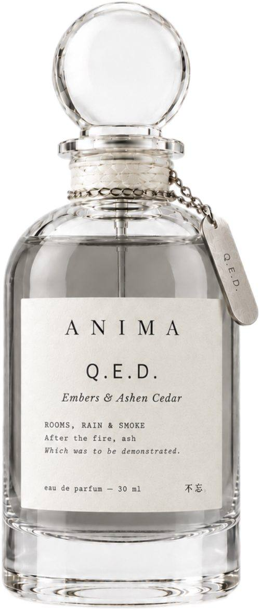
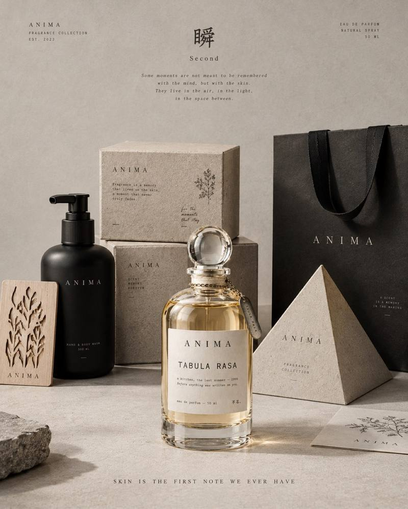

Specimen ref. SW-001 / 31.2304°N 121.4737°E
Status: composition complete — ready for carry
The scent of
somewhere you
have not forgotten.
ANIMA composes fragrances from memory — every scent returns you to a place deep in memory and carries the feeling that belongs to it. Every scent is a memory and an emotion, named as a Latin thesis. Every name carries an argument. Every argument carries a feeling.

The Memory Finder
An end to aimless searching.
Discover which memory you want to re-live, hold onto, or remember the most.
Swipe to see all, then tap a photograph to open that scent.


Three collections, on a clean white ground.
Three collections. Twelve memories. Find the one that feels like yours.








We recover real ones.
Every ANIMA fragrance begins not in a brief but in a memory. The perfumer goes there. They interview the people who remember it. They consult botanical records, olfactory literature, archive testimonies spanning decades. The composition emerges from documentation, not imagination. The result is a smell specific to a real coordinate — a real moment — that you can look up, verify, and return to in your own memory. This is the only claim in the fragrance industry that requires genuine evidence to make. We make it because we have the evidence.
Stillwater
City Editions
Before the Pudong towers. The French Concession in August. Wet stone, osmanthus, and the particular warmth of a lane house courtyard at dusk. Composed from sixteen resident testimonies and three botanical surveys of pre-development flora.
The river district before the expressway. Hinoki cypress, tatami dust, river-stone mineral, and the cold clarity of water that has run through granite. Documented with the assistance of three temple archivists and a pre-Shinkansen travel journal.
The Alfama before tourism. Salted cod and Atlantic wind, stone alley after rain, the specific damp of a tram car in winter. Composed from fado archive recordings, a 1960s municipal botanical survey, and four hours of recorded conversation with a retired tram conductor.
Stillwater
by ANIMA
you have not forgotten.
For the architect who keeps a physical notebook. For the person who owns three fragrances, each tied to a different chapter of their life. Stillwater is ANIMA's memory research made portable — precise, considered, and deeply anchored in place.
Explore StillwaterTypography: Courier New throughout.
Closure: sliding drawer — two-hand ritual open.
Insert: grey pressed pulp, compostable.
Label: coordinate, number, name. Nothing else.
The absence of information is itself a design decision.
Archive
by ANIMA — Permanent.
Full bespoke olfactory identity for your property. Field research, composition, small-batch production. Delivered with the bound Archive Document — a complete record of every compositional decision, in linen, for your lobby.
Co-branded Memory Box produced exclusively for your property. Your name above ours. Sold at checkout. Three revenue streams: commission, annual supply contract, and retail revenue share of 22% per unit.
The bound linen record of the composition process — ingredients sourced, testimonies referenced, decisions made. Available to any guest who asks. The story of your scent, permanently recorded.
your space will leave behind?
"Scent is the only sense that bypasses the thinking mind entirely. It arrives in memory before language can intercept it. We compose for that moment of arrival."
Scents that cannot
be collected again.
The Climate Archive Collection composes from endangered and extinct olfactory landscapes. These editions are not limited by production choice. They are finite by definition — the landscapes that anchored them no longer exist in the form we documented. Each edition is numbered, limited to 500 units globally.
30.6928°N / 111.2865°E
Archive Edition — 30ml EDP
ANIMA 不忘
Matte black lacquer / silk interior
Bound Archive Document included
Sets, gifts, and more from ANIMA.
Gift sets and hand & body care, alongside the perfumes.

Try the whole collection first.
Twelve 2 ml samples. Try them first, then choose the one you keep.
2 ml sampleSteamed Lactones & December FrostPro tempore
2 ml sampleBruised Lychee, Bleeding PassionfruitRicochets
2 ml sampleCrushed Coconut, Salt-Stained RumQuid pro quo
2 ml sampleSqueezed Limoncello, Sun-Baked StoneCeteris paribus
2 ml sampleSunday PillowTabula rasa
2 ml sampleNewborn’s Blanketde novo
2 ml sampleHis T-ShirtIpso facto
2 ml sampleMacerated Grapes, Bleached CorkDe facto
2 ml sampleFestive Hearth & Roasted ChestnutModus operandi
2 ml sampleDark Slate, Rain-Struck GlassNon sequitur
2 ml sampleEmbers & Ashen CedarQ.E.D.
2 ml sample